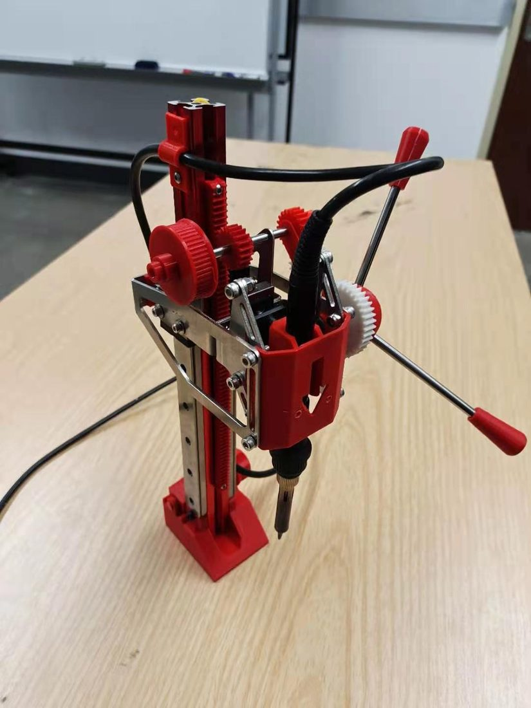
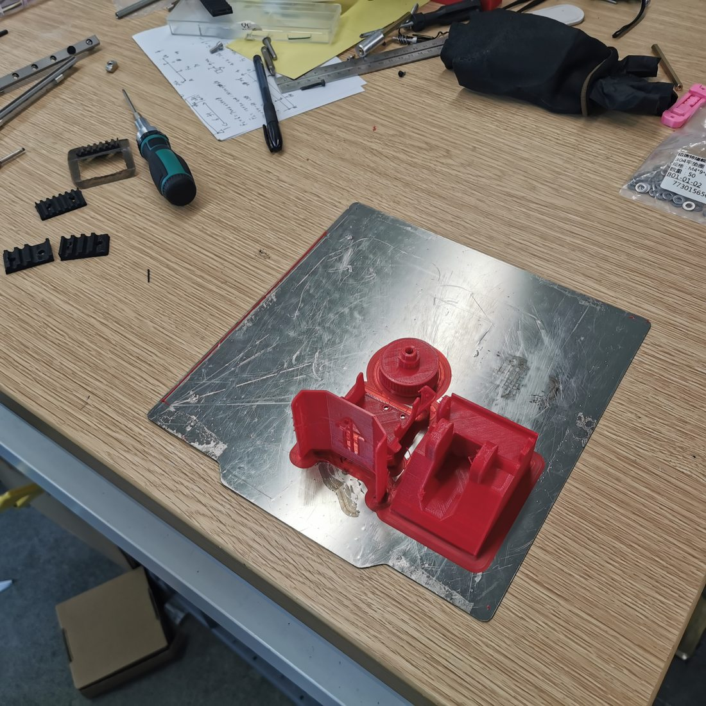

低成本热压螺母植入机设计Low-cost Heat-staking Nut Insertion Machine
针对市售热压螺母植入机价格昂贵、操作复杂的问题，重新设计一款低成本、易操作、深度可控的植入机，并制作可实际使用的样机。我负责全齿条主体系统与锁紧系统设计。Against expensive, complex commercial machines, we redesigned a low-cost, easy-to-use, depth-controllable heat-staking inserter and built a working prototype. I owned the full rack-and-pinion body and the locking system.
项目背景Background
热压螺母植入是将金属螺母热压嵌入塑料件的常见工艺，市面设备价格高、操作复杂。团队目标是做一款成本低、易操作、深度可控的替代方案，并造出能真正使用的样机。Heat-staking presses a metal nut into a plastic part—a common process whose commercial machines are pricey and complex. The team aimed for a low-cost, easy, depth-controllable alternative and a genuinely usable prototype.
我的具体工作What I Did
- 全齿条系统设计：用全齿条系统构建机器主体，配合同步带传动，增强结构稳定性与传动刚度。Rack-and-pinion body: built the main body with a full rack-and-pinion system plus a timing belt for stability and transmission stiffness.
- 锁紧系统设计：设计平行四边形锁紧机构配合高度控制系统，实现植入深度精度控制。Locking system: designed a parallelogram locking mechanism with a height-control system for precise insertion depth.
- 人机改良：参与手把的改良设计，改善操作体验。Ergonomics: contributed to an improved handle design for better operation.
- 全英文协作：与教授全英文交流，锻炼工程英语表达。English collaboration: worked entirely in English with the professor, building engineering-English communication.
成果与亮点Results & Highlights
- 完成可实际使用的样机（非纸面设计）。Delivered a genuinely usable prototype (not just a paper design).
- 通过全齿条系统提升稳定性、通过锁紧 + 高度控制系统实现深度精度控制，针对性解决"贵、难用、不精确"三大痛点。The rack-and-pinion improves stability and the locking + height-control system delivers depth precision—directly tackling "expensive, hard to use, imprecise."
实物操作演示视频Demo Video
红色样机的实际热压植入操作演示。Hands-on demonstration of the red prototype performing heat-staking insertion.
项目图片Gallery

